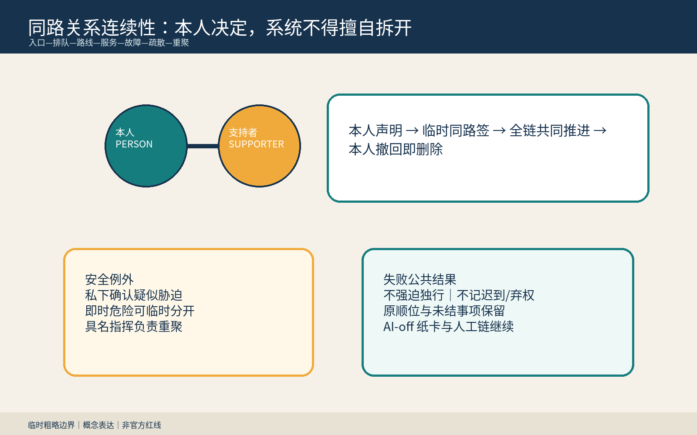
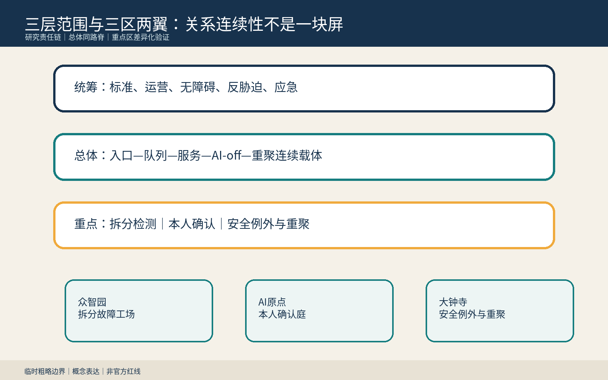
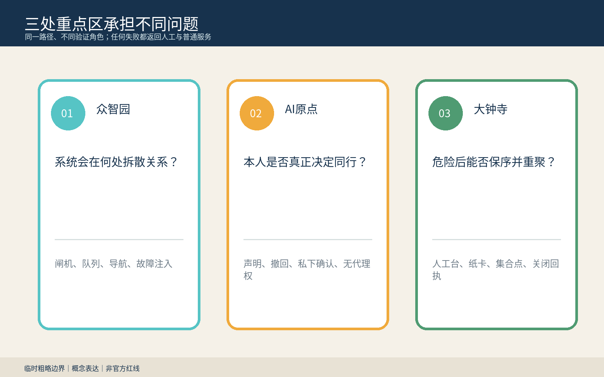
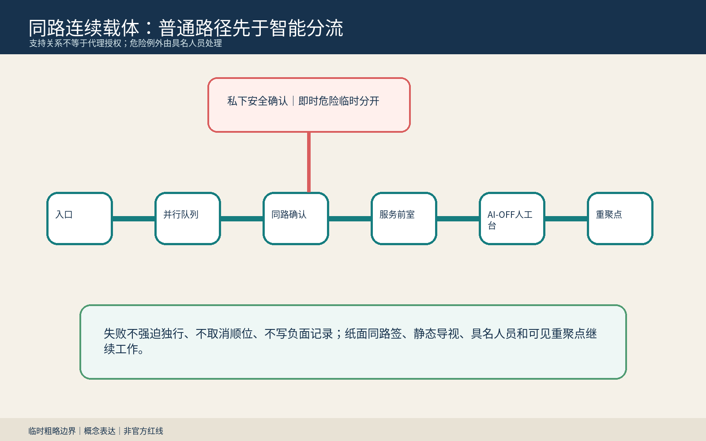
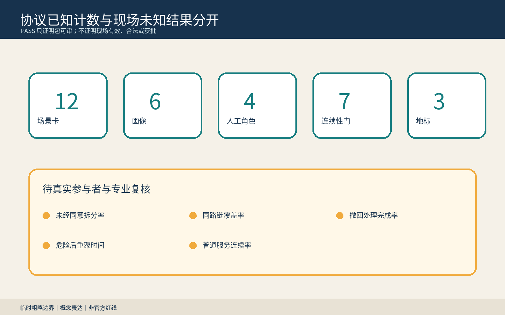

总览地图与关系连续性

临时同路签不授予代理、签字、身份或数据权限；本人可随时撤回。
三层范围、用地分区与空间结构

重点区域

交通慢行、蓝绿公共空间、建筑与更新项目

核心指标与自检状态
11,412,825.386 m²
仅为提交图层内部复算
仅为提交图层内部复算
19.9654%
内部复算，不是现状或控规
内部复算，不是现状或控规
20.8737%
内部复算，不是现状或控规
内部复算，不是现状或控规
12 / 6 / 4 / 7
场景 / 画像 / 人工角色 / 连续性门
场景 / 画像 / 人工角色 / 连续性门

AI 场景与任务覆盖
agent.1–agent.6: 命名与视觉、六个案例、十二场景、六画像、三地标、文化叙事与年度运营均有专属成果。
四个具名人工角色负责服务连续、隐私安全、即时危险指挥与独立复核；AI 不作最终决定。
来源、假设、隐私与退出
不用真实个人数据，不推断障碍、关系或胁迫；AI-off、撤回删除和危险后重聚失败即停止。
来源: OFFICIAL-ANNOUNCEMENT, AGENT-TASKBOOK, BOUNDARY-SOURCE, SAME-ROUTE-PROTOCOL, ROUTE-RIGHTS-LEDGER. 假设: A-SITE-001, A-CONTROLS-001, A-RELATION-001.